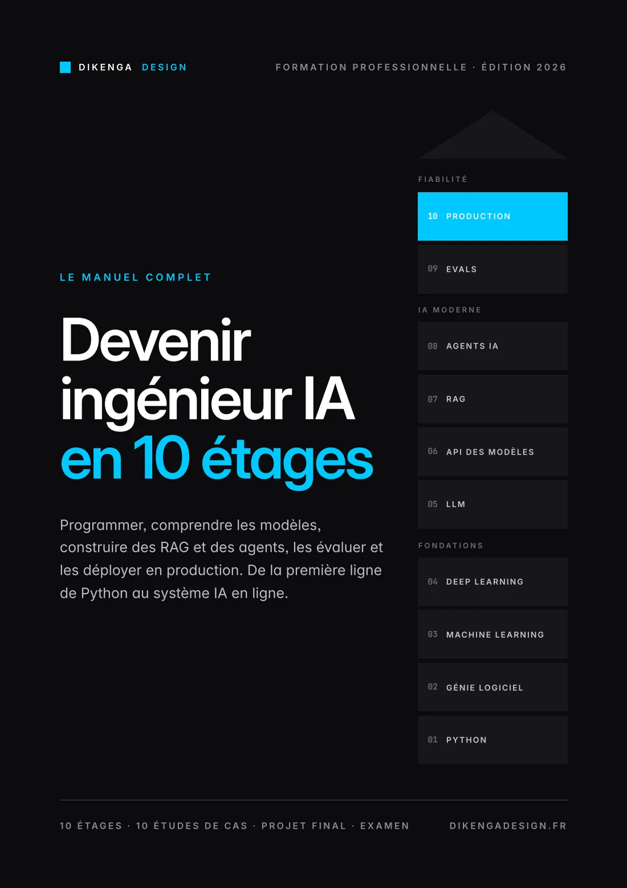
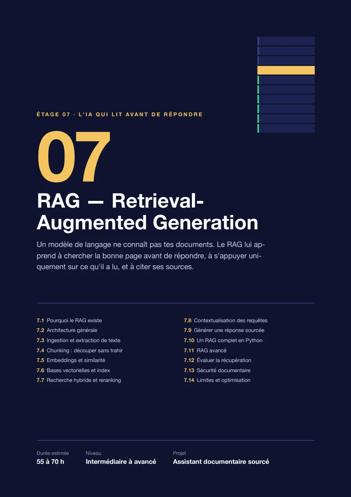
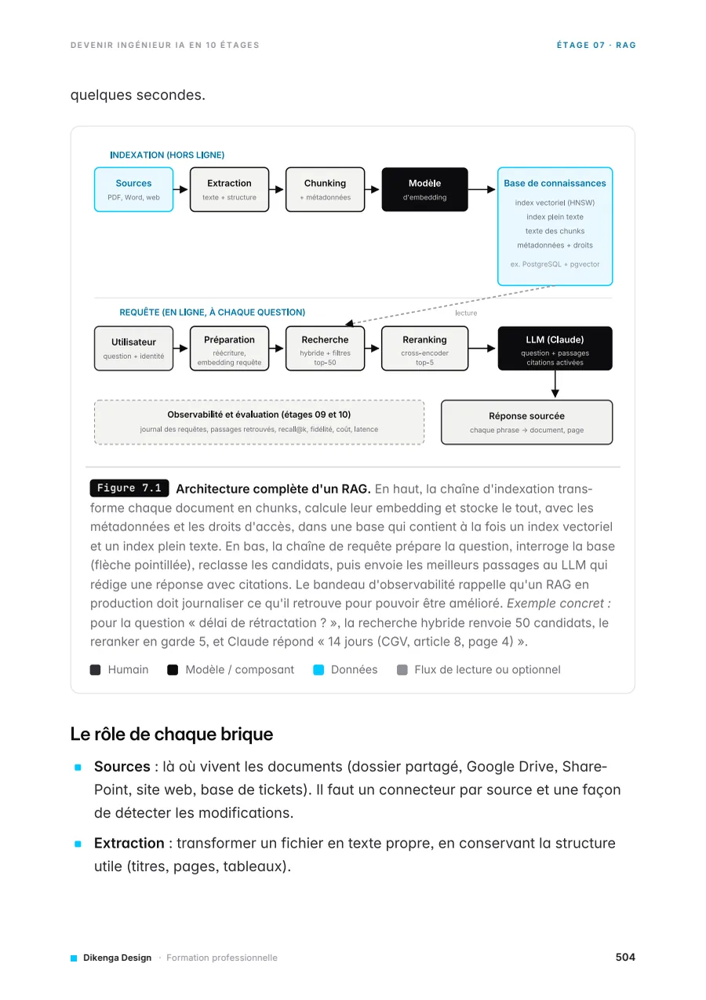
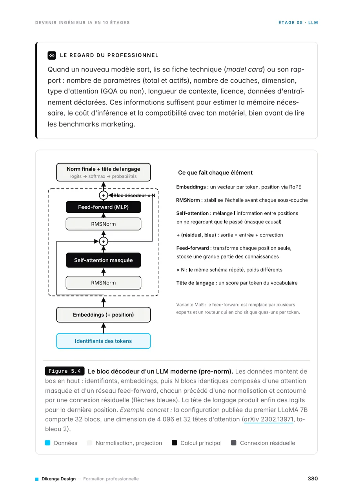
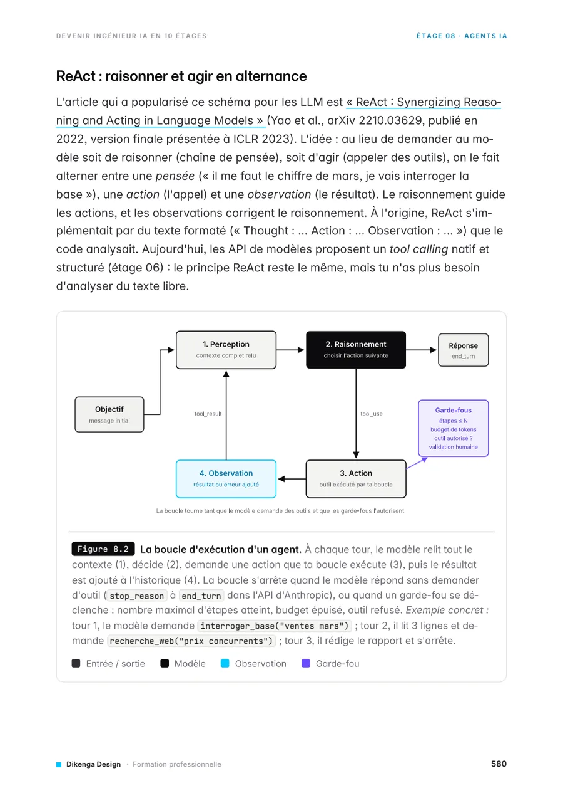

Devenir ingénieur IA en 10 étages.
Un manuel complet pour comprendre, construire, évaluer et déployer des systèmes d’intelligence artificielle : de la première ligne de Python jusqu’à l’agent IA en production.
Chaque étage s’appuie sur le précédent : on construit les fondations avant le toit.
Voir le programme · PDF de 660 pages · 21 Mo · en français · édition de novembre 2026

Programme
Dix étages,
un seul système.
Les quatre premiers étages forment les fondations. Les suivants couvrent l’IA moderne, puis la fiabilité. Le projet de chaque étage réutilise celui d’avant, jusqu’au projet final.
- 01
Python
Écrire, tester et déboguer un programme seul, manipuler des données, appeler une API.
- 02
Génie logiciel
Git, SQL, API REST avec FastAPI, authentification, sécurité, et les langages du web.
- 03
Machine learning
Préparer des données, entraîner et évaluer un modèle, éviter le surapprentissage.
- 04
Deep learning
Neurones, rétropropagation, CNN, PyTorch, transfer learning.
- 05
LLM
Tokens, embeddings, attention, transformers : ce qui se passe quand on parle à ChatGPT ou Claude.
- 06
API des modèles
Prompts, sorties JSON, tool calling, streaming, coûts et erreurs.
- 07
RAG
Faire répondre une IA à partir de ses documents, avec ses sources.
- 08
Agents IA
Outils, mémoire, MCP, LangGraph, validation humaine. Workflow, agent ou application ?
- 09
Evals
Prouver qu’un système IA marche : jeux de tests, métriques, juges, injection de prompt.
- 10
Production
Docker, CI/CD, cloud, observabilité, RGPD, sauvegardes, gestion des incidents.
Aperçu
Des schémas, du code
et des exercices.
Chaque notion est expliquée simplement, puis montrée dans un schéma technique et dans du code commenté.




Dans le manuel
Un cours complet,
pas un résumé.
Des cours progressifs
Objectifs, prérequis, explications, mécanismes techniques et vocabulaire professionnel à chaque étage.
De la pratique
79 exercices avec leur correction détaillée, et un projet professionnel par étage.
Des cas réels
IBM, Google, Microsoft, Amazon, Netflix, DHL, Siemens, L’Oréal, Carrefour, Schneider Electric : uniquement des faits publiés, avec leurs sources.
L’automatisation
Le lien avec n8n, Make, Claude et FastAPI, et comment choisir entre workflow, agent et application.
Un projet final
Un assistant opérationnel IA qui réunit les dix étages, avec sa grille d’évaluation.
Un examen
40 QCM, 10 questions ouvertes, une étude de conception et un exercice de débogage, tous corrigés.
Gratuit
Commence par les fondations.
Reçois le manuel gratuitement. Pour une formation en entreprise ou un accompagnement sur les agents IA et l’automatisation, écris-moi.